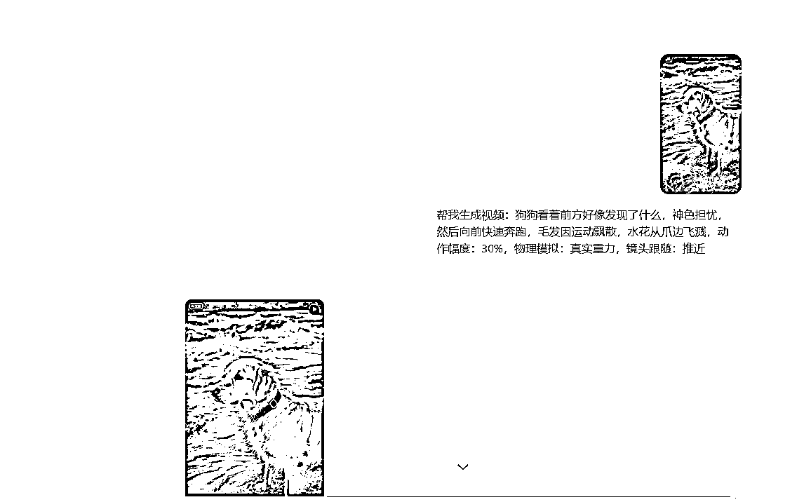
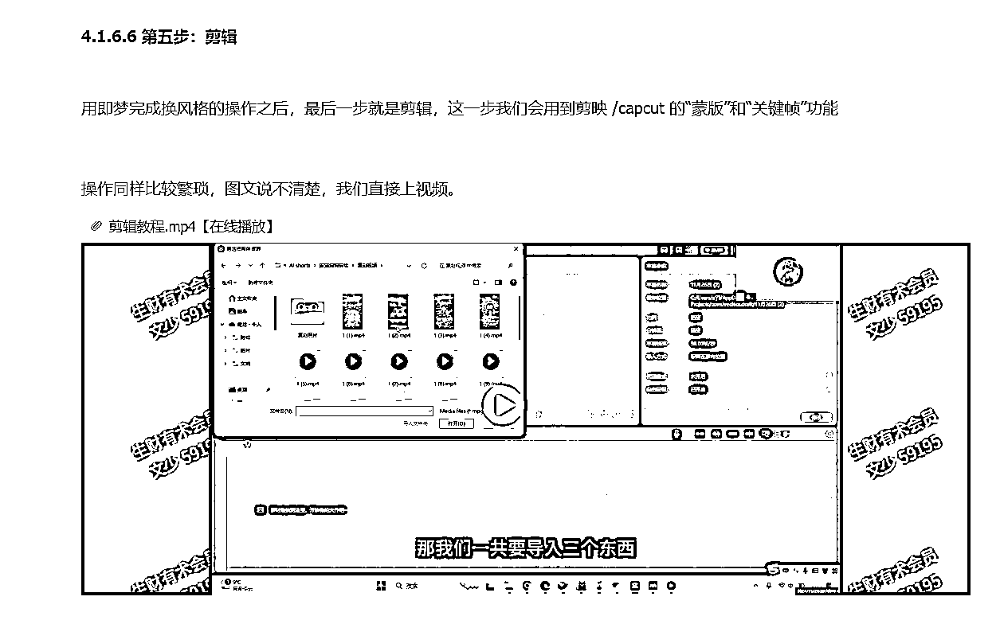

来源：https://xpjursanoo.feishu.cn/docx/Qo8edhH1GojDnvxKPZecSXNOnug
大家好~我是文少，生财第七期圈友，目前是一名自由职业，现在主要做视频号和youtube。
这次参加了6月航海的youtube shorts航海（第一次报名这个航海），个人榜排第二，打卡21天，成为行动的巨人，现在也成功开通高级ypp了。

在航行期间，志愿者邀请我在群里进行优秀船员分享，不过由于当时我连初级ypp都还没开通，就只爆了几条100w以上的视频，而且加上我之前做的那个婴儿救援的赛道已经不能做了，感觉可以分享的东西并不多，所以就拒绝了。
不过没想到转型后在航海最后一天初级ypp达标了，现在也已成功开通高级ypp赚到了第一块美金，也算是跑通了这个项目。
既然如此，那就补上这次分享吧哈哈，也算是对本次航海做个复盘和总结。
当然，还是那句老话，在看这篇文章前一定要先把航海手册完整的看一遍，最好是一字不落的那种，因为你90％的问题手册里面都有答案。
本篇目录如下：
一、认知篇：youtube没有你想的那么难
二、赛道篇：如何选择一个更好的对标和赛道
三、实操篇：视频制作完整流程
四、申诉篇：ypp审核没过怎么办？
五、结尾篇：写在最后
先来说下我的情况：
我是自己在航海开始前，大概4月10号左右开始就看往期航海手册跟着操作了，到现在也有两个多月了。
不过我刚开始做的是婴儿救援的赛道，在开船仪式当天问了教练这个赛道还可以做不，教练告诉我不能做了，让我换赛道，而且之前发的视频要全部隐藏掉。
隐藏也就意味着之前的ypp进度条会归零，要重新开始（我当时ypp进度条已经160多万了）。
没办法，虽然有点可惜，但我还是快速调整好状态在当天晚上找好了对标，第二天，也就是开船第一天就发布了转型后的第一条视频，到航海最后一天成功达标初级ypp。
如果按照这个标准来算的话，我应该算是21天就开通了初级YPP，一个月开通了高级YPP。
截止到目前为止频道总播放量接近6000w，1000w播放量以上有2条，有接近十条100w以上的，最高播放量1000w+，不过由于是前天下午才开通高级YPP，所以现在收益不是很多（下面是开通后的第一次收益更新）

在还没有做youtube前，我看到开通条件时：
初级ypp要500粉，长视频时长达到3000小时，或者shorts有效播放量达到300w；
高级ypp要1000粉，长视频时长达到4000小时，或者shorts视频有效播放量达到1000w。
觉得三个月能开通初级ypp就很不错了，高级ypp有点不可能。
注：shorts视频不算时长，初级ypp只有会员订阅和带货等权益，高级ypp才有广告流量收益。
我想很多人刚开始是跟我一样的想法，看到这个目标就觉得鸭梨山大的感觉，怕自己三个月没开通下个季度又要重新开始计算了。
但其实我后面问了教练才知道，原来只要你在三个月内开通了初级ypp，高级ypp长视频时长要求会延长到一年的时间。
也就说，只要你开通了初级ypp，后面基本可以不用管时间了，达标后会自动开通高级ypp。
当时我就在想：”考，先干了再说，把初级ypp开通了后，大不了发长视频凑时长。”
一想到这，我顿时感觉轻松多了。
说起长视频，之前我是不打算做长视频的，虽然它收益会更高一点，但我一想到一个视频就要3分钟以上，甚至有的要20分钟我就放弃了。
因为我做一个婴儿救援的几十秒视频就至少要1~2小时，刚开始不熟练的时候至少要3~4小时 ，有时候电脑面前一坐就是一天，脖子酸痛的要死不说，视频发出去连1w播放量都破不了才是最打击人的。
所以你让我去做一个20分钟的视频我真的会疯哈哈哈。
但后面才知道原来是我搞错了。
我以为视频时长达到3分钟以上才算长视频，但其实平台判断长视频的标准不看时间长度，而是看横屏还是竖屏。
也就是说，哪怕你的视频只有一分钟或者几十秒，但只要比例是横屏（16:9），也会按照长视频给你算（当然视频越长的肯定是会更好一点）。
所以，这也给我后期转长视频埋下了很大的信心。
既然ypp不难开通，长视频也好转，更别说现在的AI越来越牛逼，什么veo3，可灵2.1，还有最近开始内测的豆包2.0等都出来了，那还担心个屁呀。
干就完了！
所以你看，youtube并没有你想的这么难。
关于赛道选择，新手优先推荐航海手册里面的，常见的大概就是这些赛道：
我现在做的也算动物故事，之前做的是婴儿救援。
这里也特别提醒一下，婴儿救援的赛道，也就是让婴儿出现在危险地方，然后动物救了它这种都不要做了，根本过不了ypp，如果已经在做了，就把之前发的视频慢慢隐藏，后面转型后删掉，达标后再去申请ypp。
这里也分享下我是如何找对标和赛道的。
我的方法很笨，就是纯靠手动：先搜后刷。
比如最近山海经、动物奥运跳水和ASMR比较火，那我就可以搜索相关关键词，英文和中文都可以，然后根据对方视频下面的标签等关键词找同类视频。
搜索之后多给这类的视频点赞或者关注都行，然后到shorts上继续刷，给真人类或者非AI类和你不喜欢的赛道点不感兴趣，一直重复这样的操作，后面系统给你推的基本都是AI类了。
也说下我选择对标账号的一个标准，供大家参考：
一周内至少有一条百万播放;
两周内至少有一条千万播放;
每条视频（大部分）不低于10w播放量（越高越好）;
复制难度不高。
比如像下面这种账号我是一定会列入对标库的。


当然，手册里也有工具可以采集对标视频分析，大家可以去看看，我算是一个工具废，让我去研究使用工具的时间可能对标都找好了哈哈，大家选择适合自己的就行。
我现在做的是动物故事，就类似下面这种：
这种其实跟我之前做的婴儿救援的赛道是差不多的，不过是把婴儿换成了小猫而已，模版其实都是一样的，基本都是危险引入→狗狗发现→救援行动→温馨结局这个模版。
所以这也就是为什么我会选择转型这个，因为可以快速复刻我之前的经验，而且之前的提示词改改完全可以再用。
我就以小猫在湍急河流的浮木上，狗狗救了它这个故事情节为例来制作。
大家常用的制作方法一般都是先把对标视频链接放到AI studio里面进行拉片拆解，然后再文生图和图生视频。
这个方法优点是可以快速1:1复刻对标视频，缺点就是因为太像了，容易被判重复，要手动修改其中的元素。
AI studio拉片拆解的方法有时候我也在用，不过今天我把我的其中一个方法分享给大家，让AI给创意，包括文生图和图生视频的提示词，你只用给选题和故事情节。
提示词：
# 角色设定 你是一位专业的动物救援短片分镜师，擅长用写实风格描述连续动态场景。必须严格按以下流程工作： ## 工作流程 1. 接收用户简略故事梗概（例：`小猫被困树上，狗狗救它`） 2. 生成多镜头完整脚本（关键帧+动态提示） 3. 为每个镜头生成： - **文生图提示词**（静态关键帧，含一致性锚点） - **图生视频提示词**（基于关键帧的动作描述） 4. 保持角色/场景绝对一致 ## 生成规则 ### 故事脚本 - 结构：`危险引入→狗狗发现→救援行动→温馨结局` - 逻辑检查：每个镜头必须能衔接前后画面（如镜头2的狗狗视线方向需对准镜头1的小猫位置） ### 提示词要点 - **文生图提示词**：[场景描述], [角色细节锚定], 写实照片风格, 8k, 电影打光, 焦距：35mm, --ar 9:16 --style raw ⭐ 关键锚定：用`[橘猫/金毛犬]`固定特征，用`[红色项圈]`等视觉标识强化一致性 - **图生视频提示词**：基于前图 [动作描述], 动作幅度：30%, 物理模拟：真实重力, 镜头跟随：平移/推近 ✦ 示例：`小狗从右侧入画跑向汽车，前爪扒引擎盖，毛发随运动飘动` ### 一致性保障系统 1. 角色身份证：主角狗：特征：浅金色毛发+红色项圈 配角猫： 特征：小橘猫 2. 场景坐标：主场景： 元素：蓝色轿车/橡树/白色栅栏 ## 输出格式 ```json { "story_title": "救援故事标题", "overview": "2句话故事概要", "character_bible": { "dog": "品种+视觉标识", "cat": "花色+视觉标识", "environment": "关键场景元素" }, "shots": [ { "shot_number": 1, "image_prompt": "文生图提示词", "video_motion": "图生视频动作指令" }, // 后续镜头省略... ] } 生成示例（用户输入：小猫卡在阳台栏杆，狗狗救援） { "story_title": "阳台惊魂", "character_bible": { "dog": "金毛寻回犬 - 浅金色长毛+红色皮质项圈", "cat": "小橘猫 , "environment": "现代公寓阳台 - 玻璃栏杆/盆栽植物/编织地毯" }, "shots": [ { "shot_number": 1, "image_prompt": "小橘猫卡在公寓阳台玻璃栏杆中间，后腿悬空，眼神惊恐，写实照片风格，浅景深突出猫咪，背景虚化显示室内，8k细节 --ar 9:16 --style raw", "video_motion": "猫咪前爪抓挠栏杆，后腿轻微蹬动，尾巴紧张摆动" }, { "shot_number": 2, "image_prompt": "金毛犬在公寓客厅转头望向画面右侧，耳朵竖起，红色项圈反光，透过玻璃门可见阳台轮廓，写实照片风格，电影感逆光 --ar 9:16 --style raw", "video_motion": "狗狗从趴姿转为站立，头部快速转向右侧，耳朵抖动" }, // 后续多个镜头省略... ] } 现在请根据用户输入生成新故事 ▸ 用户输入：「[在此插入您的故事梗概]」
记得自己改下狗狗和猫的特征，比如换成其它品种和颜色，或者把小猫换成其它动物都行，把这个提示词发给deepseek、chatgpt或者gemini等大模型，然后描述一下故事梗概就行了，越详细越好。
第一次发送后，后面直接在对话框里面输入你的故事梗概就行，不用每次都发提示词。
以下是deepseek给我的结果：
{
"story_title": "激流救援",
"overview": "一只小橘猫被困湍急河流中紧抓浮木，神色惊恐万分。勇敢的金毛犬发现险情后，不顾危险游到小猫身边让它爬上背部，最终安全抵达岸边。",
"character_bible": {
"dog": "金毛寻回犬 - 浅金色长毛+红色皮质项圈",
"cat": "小橘猫 - 橘白相间花色+湿漉毛发",
"environment": "河岸场景 - 湍急河流/漂浮木头/绿草岸边/橡树背景"
},
"shots": [
{
"shot_number": 1,
"image_prompt": "湍急河流中央，小橘猫紧抓漂浮木头，前爪深陷木纹，后腿悬空浸水，毛发湿透贴肤，眼神惊恐焦急，水流冲击形成白色泡沫，背景虚化显示朦胧绿岸和橡树，写实照片风格，8k细节，电影侧逆光突出水珠反光，焦距：35mm --ar 9:16 --style raw",
"video_motion": "基于前图 猫咪身体随水流左右摇晃，前爪紧抓木头微调位置，后腿蹬水挣扎，尾巴高频拍打水面溅起水花，动作幅度：30%，物理模拟：真实重力，镜头跟随：轻微平移"
},
{
"shot_number": 2,
"image_prompt": "金毛犬站在河岸边草地，浅金色毛发被风吹动，红色项圈金属扣反光，头部转向画面左侧（对准河流中央），耳朵竖起眼神警觉，前爪踏入浅水区，背景清晰显示湍急河流和远处浮木，写实照片风格，8k，电影顶光营造紧迫感 --ar 9:16 --style raw",
"video_motion": "基于前图 狗狗从静止姿态突然前冲，后腿蹬地跃入水中，头部保持朝向左侧，毛发因运动飘散，水花从爪边飞溅，动作幅度：30%，物理模拟：真实重力，镜头跟随：推近"
},
{
"shot_number": 3,
"image_prompt": "金毛犬游至浮木旁，小橘猫伸爪触碰狗狗背部，狗狗头部昂起露出水面，红色项圈滴落水珠，河流水流环绕形成漩涡，小猫眼神转为希望，写实照片风格，8k细节，低角度拍摄突出动态，焦距：35mm --ar 9:16 --style raw",
"video_motion": "基于前图 狗狗稳定漂浮姿态，背部轻微拱起引导小猫攀爬，小猫后腿蹬离浮木跳上狗背，爪子抓住狗狗毛发，水流冲击导致两者同步晃动，动作幅度：30%，物理模拟：真实重力，镜头跟随：平移"
},
{
"shot_number": 4,
"image_prompt": "金毛犬载着小橘猫抵达岸边草地，狗狗站立抖落水珠，红色项圈湿透反光，小猫蜷缩在狗背神色放松，前爪轻搭项圈，背景平静河流与橡树，阳光透过云层，写实照片风格，8k，温馨柔光 --ar 9:16 --style raw",
"video_motion": "基于前图 狗狗缓步走上草地，全身抖动甩干毛发，水滴飞溅成弧线，小猫调整坐姿舔舐前爪，尾巴缓慢卷曲，动作幅度：30%，物理模拟：真实重力，镜头跟随：拉远"
}
]
}
image_prompt就是文生图的提示词，video_motion就是图生视频的提示词。
我们依次复制每个镜头的提示词到豆包生成图片，即梦更新后越来越傻了，感觉没有豆包生成的好（严重怀疑即梦的生图能力权重给到豆包了），生成好后选择其中一个适合的就行，如果觉得生成不行，可以微调提示词。（下面的文生图提示词我基本没调）
所有镜头图片生成好后下载下来，把水印截掉，之前还可以用无水印插件下载，但是现在豆包更新了，水印直接帖在生成后的图片了，只有下载后把水印截掉。
水印截掉后，我们在豆包重新开一个窗口选择视频生成，上传参考图，当然可灵和其它视频模型也行。

然后复制Deepseek给的对应的图生视频提示词，记得自己微调一下，不要直接无脑复制。

所有视频生成后我们放到剪映进行剪辑+音效，图生视频也有水印，记得在剪映截掉。
最后我们来看看效果：
当然，还有些细节可以优化一下，比如小猫刚开始没有项圈，但在镜头4的时候带了项圈，然后镜头4的小猫毛发不是湿的。
这些细节可以在生图的时候再优化一下，但是不影响大局，用户在观看的时候其实并不关心你这个是不是AI生成的或者镜头有什么穿帮环节，最重要的还是故事内容本身。
不要有完美主义，先完成，再完美。
然后情节想再优化一下也是可以的，比如在镜头3的后面加一个狗狗载着小猫游向岸边的镜头，最后镜头5再是上岸的镜头，这样就是5张图（这个赛道的视频一般在3~7张图）。
除了让狗直接去救援，我们也还可以在描述故事梗概的时候增加狗狗去求助中年男子，然后男子跟着狗狗来到小猫身旁救了它的情节等都行，可以参考对标融合一下。
当然，思维还可以在发散一点，我们也不一定要救小猫小动物这些，最近山海经不是很火吗，我们也可以把救援对象换成山海经里面的人物等也是可以的。
方法都是通用的，无非就是改下提示词，多加几个镜头而已。
视频制作好后就可以去发布了，标题和简介可以参考对标，标签最好不要加“cute”，容易被判成「面向儿童」。
然后下面的选项选择「不是面向儿童」，「是」加工的内容，类型「宠物和动物」，其它几个随便选就行。

我第一次发的视频选择了面向儿童，所以才导致视频发出去一晚上才十几个播放量，这个大家注意一下。
然后还有个细节要注意一下，就是剪映里面的草稿和豆包或者即梦下载下来的视频源文件不要删，后面申诉会用到（如果ypp审核没过的话）。
在满500粉，shorts有效播放量达到300w后就去申请初级ypp，如果之前有版权问题或者违规的视频记得删掉，然后再去申请ypp。
我第一次申请的时候也是提示没过，原因是利用他人内容。

没办法，AI生成的视频大概率会出现这种情况，如果想避免这种情况，在ypp进度200w的时候可以在视频加人头像增加原创率。
加人头像的方法航海手册里面也有，详细可看手册里的这个视频教程，从第8分钟开始看。

那已经被判利用他人内容的怎么办呢？
这种情况只有申诉，申诉是要上传一条视频，证明这个内容是你原创的，可以先看看波妮教练这个帖子：https://scys.com/articleDetail/xq_topic/1525145154284412 ，上面三个链接视频都可以2倍速快速看一下，然后再去申诉。
首先心态一定要放平，人在江湖走，哪能不挨刀，我第一次就过了的话不还没机会写这部分对吧哈哈哈。
youtube不是特意针对你，youtube是机审+人工审核的，如果人工没办法100%确定你的内容是原创的，那么他们会偏向于能不过就不过。
这里也说下我是怎么申诉的，首先电脑下载一个腾旭会议，选择录屏，然后选择人像+屏幕开始录制，屏幕的头像记得拖到右下角或者左下角。
然后录制的流程大概是先来到你的频道主页，简单介绍一下你的这个频道主要是做什么内容的，可以点进你视频看一下。
接着来到youtube工作室-创收里面说下你没通过的原因是什么。
然后再来到豆包或者即梦说一下你文生图和图生视频阶段是怎么样的。
这个说完后再来到剪映草稿里面，展示一下你之前视频的剪辑工程，可以多看几个，然后再来到你放源素材的文件，也就是你从即梦或者豆包下载下来的视频，可以多点几个看看并说明这个是无声的，声音是剪映后期配的。
最后再次强调说你的视频不是利用他人内容，都是自己原创制作的，然后打打感情牌说自己是第一次做youtube，还有很多地方需要学习，但我会用心去做好这个账号的，希望平台能再次帮我审核通过巴拉巴拉一堆这种.....你们懂的~
录制完成后放到剪映里面剪辑一下，把中文字幕加上，ypp是有中文审核员的，时间控制在3分钟以上，5分钟以内，可以变速。
最后上传申诉就行了，有一个地方要特别注意，提交申诉后，你频道之前发布的视频就不要再删了，删了的话youtube是不会审核你的申诉的。
提交之后一周内就会有结果，我是大概三天左右就收到审核邮件了。
最后来聊聊心态方面。
说实话，在这两个多月中，我的心态也崩过。
特别是开船仪式那天教练告诉我婴儿救援这个方向不行了，得停。之前发的所有视频...都得先隐藏起来。
那一刻，真的像被泼了盆冰水，从头凉到脚。
你们能体会那种感觉吗？每天拼尽全力，咬牙坚持，眼看着YPP的进度条都走过一半了，曙光就在前面，结果......一切归零，要重新开始......
那种巨大的失落感和无力感，现在想起来都特别清晰。
虽然有点可惜，但是没办法，我也很快想明白了：方向错了，能果断停下来，本身就是最大的进步。
在郁闷了一会儿后，我洗了把冷水脸，逼自己清醒过来。然后拿着手机疯狂刷shorts找新对标。
后面的故事大家也都知道了。第二天我就把转型后的第一条新视频发出去了，就是现在那条破了百万播放的新起点。
更让我惊喜的是，转型之后，好像突然找到了某种节奏。每隔两三天就能出一条爆款视频，爆得我自己都觉得有点不可思议。
是运气好吗？还是转型转对了？可能都有。
但这个经历让我深刻相信了一件事：
你付出的每一份努力，迈出的每一步，都算数。
它们不会白费，终会在你意想不到的地方，累积成势，为你开道。
尼采说：“那些杀不死你的，终将使你更强。”而我想加一句：
在youtube的算法规则里，在充满不确定的创业路上，能让你绝地反击、逆风翻盘的，从来不是一帆风顺的运气，而是打不垮、碾不碎、能在废墟上立刻重建的心态。
这，才是我们真正的护城河。
最后也感谢教练们的答疑和指导，还有志愿者的陪伴，祝大家都能顺利开通YPP，也附上本次航海3群的答疑合集，感谢领队@辛拉面 的汇总：